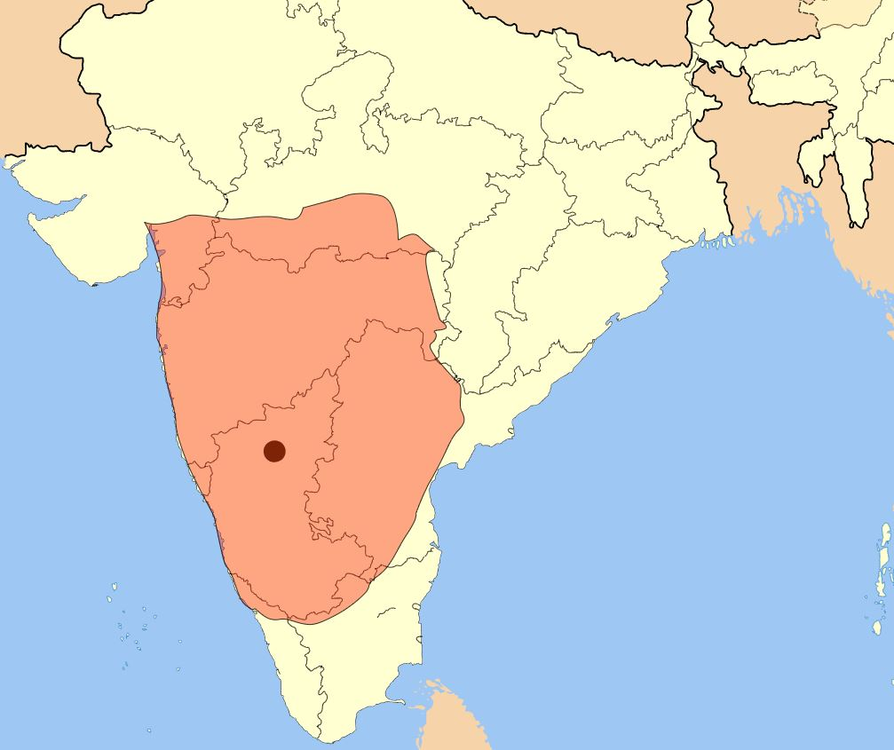
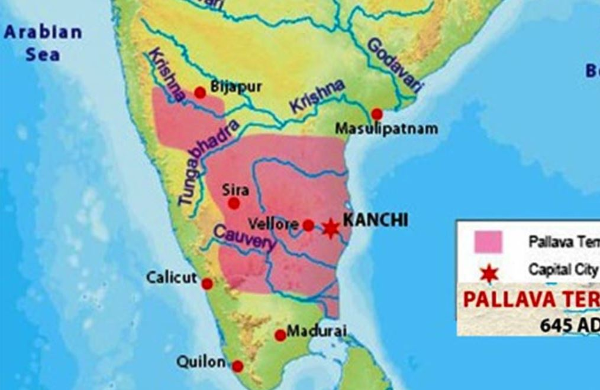

Post Gupta South India (535-1122 C.E)
Chalukyas And Pallavs (535-800 C.E)
Chalukyas of Batapi
Chalukya Empire Map

Pulakeshi I
- First capital was Batapi (in Bijapur)
- He was the first free king of this dynasty
- His deeds are known from the Batapi inscriptions
Kirtibarman I
- Son of Pulakeshi I, he extended his empire upto bihar and bengal,he also conquered Chola,Pandya
Mangalesh
- Brother of Kirtibarman I
- Took the title of Ranabikranta, Prithivi-Ballav
- Tried to place his son on the throne, was murdered by Pulakeshi II, son of Kirtibarman I
Pulakeshi II
- He was the greatest king of this dynasty
- He assumed titles of Ballabh, Prithivi-Ballabh, Parameshwar-Pram-Bhagawat
- His deeds are known from Aihole inscriptions writen by his court poet Ravikirti
- He defeated Harshavardhan
- He defeated Pallav king Mahendravarman I
- He was killed by Narasinghavarman I, son of 1st Mahendravarman
Bikramaditya I
- He is credited for having re-stabilized Chalukya domination after the death of Pulakeshi II
Bikramaditya II
- Gained victory in the conflict with the Arabs
Kirtibarman II
- Last king of this dynasty
Pallavs of Kanchi
Pallav Empire Map

Singhabishnu
- His empire was spread in the region between Krishna and Kaveri
- Under his rule Mahabalipuam became a place of practice of fine arts
- Bharvi was his court poet
Mahendrabarman I
- Chalukya-Pallav feud started from the reign of Mahendravarman I (600-630 C.E)
- He wrote the sarcastic playMattavilas Prahasana in sanskrit
- He assumed the titles of Gunavar, Bichitrachitta and Pallavamalla
- He is also called Chaitakari due to the large number of temples built during his reign
- He was defeated by Chalukya king Pulakeshi II
Narasinghabarman I
- He assumed the title of Mahamalla
- He captured Chalukya capital of Batapi in 632 C.E and took the title of Batapikond
- The famous Mahabalipuram temples were built during his reign
Mahendrabarman II
- Was in power for only two years 668-670 C.E
Parameshwarbarman I
- Repelled the attacks of Bikramaditya I, and was able to protect the Pallava capital of kanchi
Narasinghabarman II
- Assumed the title of Rajsingha
- His reign is famous for progress in education and peaceful foreign policies
- Famous Kailashnath Temple was built during his reign
- The Mahabalipuram temple construstion were completed during his regin
- Dandin was his court poet
Prameshwarbarman II
Nandibarman II
- Assumed the title of Pallavmalla
- Was defeated by Chalukya king Bikramaditya II
- This was the last battle between the Pallavas and the Chalukyas
- He built the Mukteshwar Temple
Rashtrakuts and The Cholas
The Rashtrakuts
- They were feudal lords under the Chalukyas
- Dantidurga established the Rashtrakut dynasty
- He defeated last Chalukya ruler Kirtivarman II in battle of Khandesh in 753 C.E
- He was succeeded by Krishna I (758-773 C.E)
- He also defeated Kirtivarman II and brought about the end of the Chalukya dynasty
- His son Dhruv I (780-793 C.E) defeated the Gurjar king Batsharaj and Pal ruler Dharmapala
- He assumed the titles of Dhruva Nirupama, Dhruva Dharavarsha, Sreevallabh
- The greatest ruler of Rashtrakut dynasty was Gobinda III (793-814 C.E)
- He defeated the Gurjar king Nagbhatta and Pal ruler Dharmapala
- Gobinda III was succeeded by Amoghvarsha I (814-877 C.E)
- He was a peaceloving ruler ar ruled for long 63 years
- He wrote Ratnamalika and Kavirajmarga
- The last powerful ruler was Krishna III (940-968 C.E)
- He calimed to be Sakal Dakshin Digadhipati
The Cholas of Tanjore
- The Cholas were an ancient community
- Periplus of The Erithian Sea, Indica of Megasthenes and Ashoka's inscriptions mentions the Cholas
- Chola power re emerged during the middle of the ninth century
- It was due to the efforts of Vijayalaya nad his son Aditya I
- He defeated the Pallavas to establish a sovereign Chola empire
- He was succeeded by Parantaka I
- He assumed the title of Maduraikond
- Rashtrakut ruler Krishna I and the ruler of Mysore defeated him in the battle of Takkalam
- Parantaka died in 953 C.E
- Chola power was re-eestablished during the reign of Rajaraj Chola I (958-1014 C.E)
- Tanjore inscription describes his military prowess
- He was the first Indian ruler to emphasise on the need of a powereful navy
- He conquered Srilanka, Lakshadweep and the Maldives
- Rajrajeshwar temple was built during his reign
- He was succeeded by his son Rajendra Chola I (1014-1044 C.E), the greatest ruler of the Cholas
- Chola navy prowess peaked during his reign
- He assumed the titles of Martanda, Uttam Chola and Gongaikond Chola
- His main feat was the conquer of Bengal
- He also conquered Srilanka and parts of South-east Asia
- After his death, feud between Cholas and Chalukyas broke out and the Chola empire was weakened
- Kulatunga (1070-1122 C.E) is said to be the founder of Chola-Chalukya dynasty